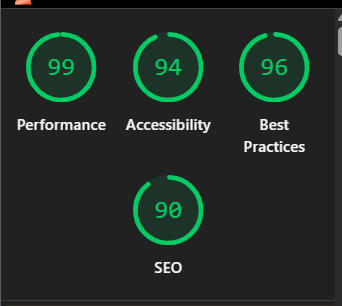

Mundo 1-1 · Prova frontend da Jungle
Kurio, por Ivan Marins
Marketplace de NFTs em SPA, com dados simulados e sem backend de produção. Esta página reúne em um só endereço o que o avaliador precisa: aplicação no ar, código, notas do Lighthouse, contas de teste e roteiro.
- 8fases entregues
- 12fluxos no Playwright
- 55/55testes E2E verdes
- 99nota de performance
Fase 01
Escolha um link
Tudo abre em outra aba. A aplicação e o código são a mesma versão que está no ar.
-
Aplicação
Kurio no ar
SPA publicada na Vercel, com mock ligado por padrão.
junglegaming-nfts.vercel.app -
Código
Repositório no GitHub
Histórico de commits, specs, planos e a suíte de testes.
ivanmartins090317/junglegaming-nfts -
Guia
README do avaliador
Contas, o que cada uma já tem, pontos de atenção e como rodar local.
Ler o README -
Arquitetura
ARCHITECTURE.md
Stack fechada, mock, paths críticos e a limitação do Sentry.
Ler a arquitetura -
Evidências
Testes manuais
Capturas da segunda rodada do mapa de testes, casos TC-01 a TC-05.
Ver as evidências -
Processo
Specs e planos
Fluxo AI-native: research, plano, revisão em contexto limpo e spec aprovada.
Abrir a pasta docs
Fase 02 · Placar
Notas do Lighthouse
Medição feita no Lighthouse do Chrome DevTools sobre a aplicação publicada.
-
Performance
-
Acessibilidade
-
Boas práticas
-
SEO

Como repetir a medição
- Abra a aplicação em uma janela anônima, sem extensões.
- Pressione F12 e abra a aba
Lighthouse. - Marque as quatro categorias e escolha o dispositivo.
- Clique em
Analyze page load.
Pequenas variações entre execuções são normais. O resultado depende da máquina e da rede.
Abrir a aplicação para medirFase 03
Contas de teste
Duas contas isoladas. A senha é exata e o e-mail não diferencia maiúsculas. Dá para criar uma conta nova em Cadastro: quem se cadastra já entra na sessão.
| Pessoa | Senha | Já tem | |
|---|---|---|---|
| Ada |
ada@kurio.test
|
kurio
|
Favoritos Emerald Ape #042 e Neon Vessel #552. Carrinho com Sage Nomad #009.
Pedido ped-ada-1, total 1.79 ETH.
|
| Bruno |
bruno@kurio.test
|
kurio
|
Favorito Golden Beat #207. Carrinho com Cosmic Bloom #118 (2). Pedido
ped-bruno-1, total 0.39 ETH.
|
Atenção
A sessão não sobrevive ao recarregar a página. O mock vive na memória da aba, então F5 devolve a loja à semente e encerra a sessão. É o comportamento esperado, não um erro.
Fase 04 · Quest log
Roteiro de avaliação
Dez missões, na ordem sugerida. Marque cada uma ao concluir. O contador é só desta aba.
Progresso 0 / 10
-
Catálogo
Em
Abrir busca neon/há oito peças. Busqueneone veja?q=neonna URL. Apague a busca e oqsome. Use a faixa de preço. -
Detalhe
Galeria, ficha, abas e mais da coleção.
Abrir Emerald Ape #042COMPRARsoma a quantidade e abre o carrinho. Um id inexistente mostraNFT não encontrado. -
Preço ao vivo
A cada 3 s, Neon Vessel #552 alterna entre
Abrir Neon Vessel #5521.99e2.09na grade, no detalhe e no carrinho. O preço de comparação2.29não muda. -
Carrinho de visitante
Inclua uma peça sem entrar. O rascunho persiste nesta aba. Ao entrar como Ada, a mesma peça soma a quantidade.
Abrir o carrinho -
Sessão e guarda
Sem entrar, abra uma rota privada. A entrada abre e, no sucesso, volta ao caminho pedido. Senha errada mostra
Abrir /perfil sem sessãoE-mail ou senha não conferem. -
Favoritos
O coração alterna no card sem abrir a peça. É otimista, com rollback se a chamada falhar.
-
Recibo
Logada como Ada, o recibo mostra Ivory Baron #088, taxa
Abrir ped-ada-10.00 ETH, total1.79 ETHe data29 Jul, 2026. O×volta ao início. -
Perfil e carteira
Edite nome e carteira. Troque a senha e entre de novo com a nova. Alterar a carteira não muda o recibo já gravado.
Abrir /carteiras -
Isolamento
Ada e Bruno não enxergam os dados um do outro. Na sessão da Ada,
/pedidos/ped-bruno-1respondePedido não encontrado.Sair limpa o cache privado. -
Responsivo
Compare as larguras 1440, 768 e 390. Abaixo de 1440, entrar e cadastrar viram tela cheia.
Fase 05
Stack e decisões
Stack fechada, sem dependência nova fora do que foi aprovado.
- Vite
- React 19
- TypeScript
- TanStack Router
- TanStack Query
- Axios
- Socket.IO
- Tailwind 4
- shadcn
- MSW
- Playwright
- Lighthouse
- pnpm
-
Sem backend
O MSW intercepta o HTTP no service worker e o socket vem de
@mswjs/socket.io-binding. Desligar o mock desliga a API inteira. -
Dinheiro
ETH é string decimal e quantidade é inteiro. O total de fechar vem da cotação, nunca de soma no cliente.
-
Idempotência
A mesma chave com o mesmo corpo devolve o mesmo pedido. Corpo diferente conflita.
-
Tempo real
Evento com versão igual ou menor não regride o estado.
confirmadoerecusadosão terminais. -
Cache privado
O cache inclui o usuário. O logout limpa o cache e a subscription do socket.
-
Visual
Roboto Mono como única família, nove cores medidas e nenhum
box-shadow.
Fase 06
Perguntas
O que costuma gerar dúvida durante a avaliação.
Por que a sessão some quando recarrego?
O mock vive na memória da aba. Recarregar nasce a loja de novo e encerra a sessão. Para
voltar à semente sem recarregar, use POST /api/dev/reset, que responde 204.
Por que alguns links não navegam?
Blog, Criadores, Aprenda, Activity, Watchlist, Offers, Downloads, Support, esqueci a senha, Google, Facebook, cupom e Ver no Etherscan aparecem no desenho, estão fora do escopo e ficam visíveis sem navegar nem mostrar sucesso.
Por que /pagamento não tem formulário?
É uma rota protegida com o título Revisão e envio. A criação do pedido, com idempotência, recibo e confirmação ao vivo, está implementada e coberta pelos testes. Os pedidos da semente mostram o recibo.
Por que não há Sentry?
Observabilidade não faz parte desta prova. Não há @sentry/* nem DSN. A
limitação está registrada no ARCHITECTURE.md.
Como rodo o projeto localmente?
Requisitos: Node 24 ou superior e pnpm 9.
pnpm install
pnpm dev
pnpm typecheck
pnpm lint
pnpm test
pnpm exec playwright install chromium
pnpm playwright